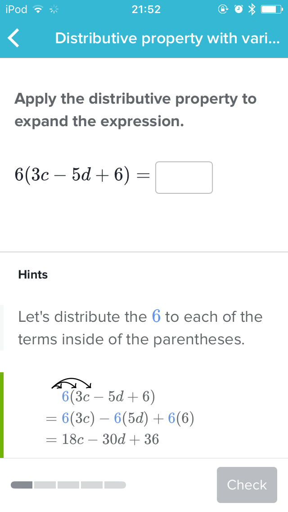

<!doctype html>
<html lang="en">
    <head>
        <meta charset="utf-8">
        <title>Type systems will make you a better JavaScript programmer</title>
        <link rel="stylesheet" href="./css/reveal.css">
        <link rel="stylesheet" href="./theme/mine.css" id="theme">
        <link rel="stylesheet" href="./css/highlight/zenburn.css">
        <link rel="stylesheet" href="./css/print/paper.css" type="text/css" media="print">

    </head>
    <body>

        <div class="reveal">
            <div class="slides"><section  data-markdown><script type="text/template">

# Type systems
### will make you a better
### JavaScript programmer

by Jared Forsyth
</script></section><section  data-markdown><script type="text/template">
### JavaScript's type system
### How to get more type errors
### Thinking with types

<aside class="notes"><p>So what&#39;s this about?</p>
<p>First I&#39;ll give a brief overview of javascript&#39;s type system, and how it
doesn&#39;t give us nearly enough type errors.</p>
<p>Then I&#39;ll go into different ways we can get more type errors :D e.g. detect
the errors that are in our code.</p>
<p>Then we&#39;ll talk about how thinking with types will improve your code, make
your coworkers happier and improve your peace of mind.</p>
</aside></script></section><section  data-markdown><script type="text/template">
### What is a type?

- a group of things
- that can be used interchangeably

<aside class="notes"><p>In very broad terms, you can think of a type as a group of things that
can be used interchangeably.</p>
</aside></script></section><section  data-markdown><script type="text/template">
### What is a type?

- numbers (`a * b, x - y`)
- strings
- things that have a `name` attribute

<aside class="notes"><p>Numbers can all be validly added together, subtracted, and
multiplied. Strings can be split, joined, and displayed to the screen.
And we could also talk about &quot;thinks that have a <code>name</code> attribute, as being a
type.</p>
</aside></script></section><section  data-markdown><script type="text/template">
### JavaScript has a type system!

`typeof x`

<table>
<tr>
<td>number</td>
<td>string</td>
</tr>
<tr>
<td>function</td>
<td>undefined</td>
</tr>
<tr>
<td>boolean</td>
<td>symbol</td>
</tr>
<tr>
<td>object</td>
</tr>
</table>
</script></section><section  data-markdown><script type="text/template">
### What are type errors?

when you try to use a thing in a context where it doesn't work.

<aside class="notes"><p>So a type error, for my purposes, is &quot;when you try to use a thing in a
context where it doesn&#39;t work&quot;. Now, I&#39;m being intentionally general when I
say &quot;in a context where it doesn&#39;t work&quot;, because that means different things
to different people, and to different language runtimes.</p>
</aside></script></section><section  data-markdown><script type="text/template">
### JavaScript has (runtime) type errors!
but not nearly as many as one would want.

- `_ is not a function`
- `cannot read property '_' of null/undefined`

<aside class="notes"><p>JavaScript has very few kinds of type errors; they&#39;re triggered when you
try to call something that&#39;s not a function, and when you try to get an
attribute of null or undefined.</p>
</aside></script></section><section  data-markdown><script type="text/template">
### Either you get weird type errors late

```js
  var x = 10
  var y = x.parent
  // ^ the real error is thinking `x` has a `.parent`
  return y.name
  // ^ but JS gives us the error here
```

<aside class="notes"><p>In this trivial example, the actual bug is relatively close to the
exception that JavaScript gives us. But all to often in real-world projects,
the place where JavaScript figures out something has gone wrong is far removed
from the actual source of the error.</p>
</aside></script></section><section  data-markdown><script type="text/template">

</script></section><section  data-markdown><script type="text/template">
### ...or no errors at all

```js
function doSomething(m) {
  // numbers don't have a count
  if (m.count > 2) {
    return "large"
  } else {
    return "small"
  }
}
// but js will happily return "small" here
doSomething(5)
```

<aside class="notes"><p>Even more insidious is when JavaScript doesn&#39;t throw an error at all,
because it tries its best to figure out what you meant and manages to avoid
anything it considers a type error.</p>
<p>These are frequently even harder to debug, because you don&#39;t have an
<code>exception</code> stack trace to get you started. You just have to pause in the
middle of a running session and try to figure out how your data got so weird.</p>
</aside></script></section><section  data-markdown><script type="text/template">

</script></section><section  data-markdown><script type="text/template">
### JavaScript tries to avoid errors

```
2/'' === Infinity
2 + {} === '2[object Object]'
2 + 'phone' -> NaN
alert(1, 2, 3, 4, 5)
```

but it backfires

<aside class="notes"><p>So what does JavaScript do? It tries to figure out what you meant,
giving you the benefit of the doubt that you probably didn&#39;t write a bug. This
ends up backfiring big time, because it makes it much harder to diagnose
problems.</p>
</aside></script></section><section  data-markdown><script type="text/template">
## How to get more type errors

- linters
- custom runtime type checking
- static type checking

<aside class="notes"><p>animate in.</p>
</aside></script></section><section  data-markdown><script type="text/template">
## Linters

<aside class="notes"><p>you might be thinking &quot;Linters? They don&#39;t have anything to do with
types&quot;. But in fact they know about 2 types: any and &quot;not declared&quot;</p>
<p>Umm maybe cut this section?</p>
</aside></script></section><section  data-markdown><script type="text/template">
### Linters know about 2 types

- any
- not declared

```js
function doSomething(argument) {
  return brgment + 1 // ERROR brgment is never declared
}
```

<aside class="notes"><p>And using a variable that&#39;s never declared in non-strict javascript is a
disaster waiting to happen. Even in &quot;strict mode&quot;, you won&#39;t know about the
error until runtime when the code gets executed.</p>
<p>TODO animate between</p>
</aside></script></section><section  data-markdown><script type="text/template">
### Linters

<table>
<tr><td>+ runs ahead of time</td></tr>
<tr><td>+ very little work</td></tr>
<tr><td>- very rudimentary</td></tr>
</table>
</script></section><section  data-markdown><script type="text/template">
### Custom runtime type checking

Sometimes useful, frequently annoying.

```js
// `doSomething` takes 3 arguments:
// a string, a list, and a number

// Valid usage
doSomething("hello", ["June"], 10)
doSomething("hello", ["June", "July"], 10)

// Should be errors
doSomething()
doSomething("hello", "June")
doSomething(1, 2, 3, 4, 5, 6)
```

<aside class="notes"><p>Say you have a function <code>doSomething</code>, which takes three arguments</p>
<p>Now, what are situations in which a function would be called with incorrect
arguments? Hopefully not immediately on the day you write it (although that
does happen). But over the lifetime of a project, things get refactored,
variables get added, removed, reused. And suddently it takes a lot of effort
during a refactor to make sure you&#39;re just calling functions with the correct
arguments!</p>
</aside></script></section><section  data-markdown><script type="text/template">
### Custom runtime type checking

Sometimes useful, frequently annoying.

```js
function doSomething(a, b, c) {
  if (arguments.length !== 3)
    throw new Error('must be called with 3 arguments')
}
```
</script></section><section  data-markdown><script type="text/template">
### Custom runtime type checking

Sometimes useful, frequently annoying.

```js
function doSomething(a, b, c) {
  if (arguments.length !== 3)
    throw new Error('must be called with 3 arguments')
  if (typeof a !== 'string')
    throw new Error('a must be a string')
  if (!Array.isArray(b))
    throw new Error('b must be an array')
  if (typeof c !== 'number')
    throw new Error('c must be a number')
}
```

<aside class="notes"><p>If you&#39;re using runtime type checks to do things that a type checker
  would do for you, you&#39;re wasting a ton of time.</p>
<p>  This is defensive programming, right? And if you&#39;re super into this there
  are libraries that will check schemas at runtime to take away some of the
  boilerplate.</p>
</aside></script></section><section  data-markdown><script type="text/template">
### Custom runtime type checking

<table>
<tr><td>- only at runtime</td></tr>
<tr><td>- lots of extra boilerplaty code</td></tr>
<tr><td>+ very powerful</td></tr>
</table>
</script></section><section  data-markdown><script type="text/template">
### React propTypes

Runtime type checking, but less annoying.

```
const MyThing = React.createClass({
  propTypes: {
    first: PropTypes.number,
    second: PropTypes.arrayOf(PropTypes.string),
    third: PropTypes.shape({
      name: PropTypes.string,
    })
  },
})
```

<aside class="notes"><p>With PropTypes, we have runtime type checking, and it&#39;s been pretty
streamlined.
BUT
only for react components, not all functions
also runtime-only, although the react-eslint plugin will check your proptypes
definition against your props usage &amp; make sure that at least all of the props
you use are listed there.</p>
</aside></script></section><section  data-markdown><script type="text/template">
### React propTypes

<table>
<tr><td>- only at runtime</td></tr>
<tr><td>- only for React Components</td></tr>
<tr><td>+ not too much extra code</td></tr>
<tr><td>+ free documentation</td></tr>
</table>

<aside class="notes"><p>documentation, but it might be wrong b/c you haven&#39;t updated the prop
types, and maybe you haven&#39;t rendered the thing in that configuration
recently.</p>
</aside></script></section><section  data-markdown><script type="text/template">
## Static type checking
with flow!
</script></section><section  data-markdown><script type="text/template">
### Static type checking
vs custom runtime checking

```js
function doSomething(a, b, c) {
  if (arguments.length !== 3)
    throw new Error('must be called with 3 arguments')
  if (typeof a !== 'string')
    throw new Error('a must be a string')
  if (!Array.isArray(b))
    throw new Error('b must be an array')
  if (typeof c !== 'number')
    throw new Error('c must be a number')
}
```

```js
function doSomething(a: string, b: Array<string>, c: number) {
}
```
</script></section><section  data-markdown><script type="text/template">
### Static type checking
vs React propTypes

```
class MyThing extends Component {
  static propTypes = {
    first: PropTypes.number,
    second: PropTypes.arrayOf(PropTypes.string),
    third: PropTypes.shape({
      name: PropTypes.string,
    })
  }
}
```

```
class Component extends MyThing {
  props: {
    first: number,
    second: Array<string>,
    third: {
      name: string,
    }
  }
}
```
</script></section><section  data-markdown><script type="text/template">
### Static type checking

<table>
<tr><td>+ runs ahead of time</td></tr>
<tr><td>+ not much boilerplate</td></tr>
<tr><td>+ applies to all fns, variables, etc.</td></tr>
<tr><td>+ free documentation, never stale</td></tr>
</table>
</script></section><section  data-markdown><script type="text/template">
### Getting more type errors in JS

<table>
<thead>
  <tr>
  <td/>
  <th>Linter</th>
  <th>Custom</th>
  <th>PropTypes</th>
  <th>Flow</th>
  </tr>
</thead>
<tr>
  <th>When do you know?</th>
  <td>now</td>
  <td>runtime</td>
  <td>runtime</td>
  <td>now</td>
</tr>
<tr>
  <th>How easy</th>
  <td>😄</td>
  <td>🚫</td>
  <td>😊</td>
  <td>🙂</td>
</tr>
<tr>
  <th>Where can it be used?</th>
  <td>🙂</td>
  <td>😄</td>
  <td>🚫</td>
  <td>😄</td>
</tr>
<tr>
  <th>How helpful</th>
  <td>🚫</td>
  <td>😊</td>
  <td>🙂</td>
  <td>😄</td>
</tr>
<tr>
  <th>Readability</th>
  <td/>
  <td>🚫</td>
  <td>🙂</td>
  <td>😄</td>
</tr>
</table>

<aside class="notes"><p>At Khan Academy, we&#39;ve recently started using Flow in our production
JavaScript, and on the whole we&#39;ve been very happy with the results.</p>
</aside></script></section><section  data-markdown><script type="text/template">
## Thinking with types

<aside class="notes"><p>So I&#39;ve just gone over the ways we can get more informative type errors,
which will help us</p>
<ul>
<li>track down bugs to their actual source</li>
<li>document our code &amp; understand how functions are to be used</li>
<li>refactor with confidence</li>
</ul>
<p>But now I want to talk about how it will change the way you program.</p>
</aside></script></section><section  data-markdown><script type="text/template">
### Thinking with types

- clever code
- implicit invariants
- implicit state machines

<aside class="notes"><p>One of the things I&#39;ve run into when adding flow to an existing project is
that there are some functions where it&#39;s really hard to come up with a type
that will satisfy <code>flow</code>. Nearly every time, I think about it a little &amp;
realize that the function is being too clever.</p>
</aside></script></section><section  data-markdown><script type="text/template">
### Clever code

<aside class="notes"><p>There is a ton of valid javascript that flow would reject; so if we&#39;re
restricting ourselves, what are we gaining?</p>
<p>Code that flow can type is also code that other people will be able to
understand better.</p>
</aside></script></section><section  data-markdown><script type="text/template">
> Everyone knows that debugging is twice as hard as writing a program in the first place.
> So if you're as clever as you can be when you write it, how will you ever debug it?
> - Brian Kernighan
</script></section><section  data-markdown><script type="text/template">
### Clever code

clever
```js
  props['on' + (fastClick ? 'MouseDown' : 'Click')] = myFn
```

unclever
```js
  if (fastClick) {
    props.onMouseDown = myFn
  } else {
    props.onClick = myFn
  }
```
</script></section><section  data-markdown><script type="text/template">
### Clever code

```js
  function doAllTheThings(first, second, third) {
    if (third === undefined) {
      third = second
      first = {options: first}
    }
  }
```

```js
  function doAllTheThings(isBoolean, data) {
    if (isBoolean) { // data is a boolean
    } else { // data is a string
    }
  }
```
</script></section><section  data-markdown><script type="text/template">
> If it's hard to type check, it's probably hard to understand
</script></section><section  data-markdown><script type="text/template">
## Implicit invariants
</script></section><section  data-markdown><script type="text/template">
### Implicit invariants

```js
  state: {
    loading: boolean,
    error: ?string,
    data: ?SomeObject,
  }
  render() {
    if (this.state.loading) return ...
    if (this.state.error || this.state.data) return ...
    return <button onClick={this.onClick}>
      Click me!
    </button>
  }
```

<aside class="notes"><p>frequently we have React components that are really representing little
state machines. Here&#39;s an example that might look familiar -- we have a
component that fetches some data, and so it starts out loading, and it will
either display an error on failure or display the data in some wonderful way.</p>
</aside></script></section><section  data-markdown><script type="text/template">
### Implicit invariants

```js
  onClick = () => {
    // Flow errors: "this.state.data might be null"
    alert(this.state.data.name)
  }
  render() {
    if (this.state.loading) return ...
    if (this.state.error || this.state.data) return ...
    return <button onClick={this.onClick}>
      Click me!
    </button>
  }
```
</script></section><section  data-markdown><script type="text/template">
### Implicit invariants

```js
  onClick = () => {
    if (!this.state.data)
      throw new Error('lol this will never happen')
    alert(this.state.data.name)
  }
  render() {
    if (this.state.loading) return ...
    if (this.state.error || this.state.data) return ...
    return <button onClick={this.onClick}>
      Click me!
    </button>
  }
```

<aside class="notes"><p>Here&#39;s one way to fix it! If you find yourself doing this, it&#39;s a huge
warning sign.</p>
<p>&quot;Of course it&#39;s not null&quot; you think, &quot;this callback function couldn&#39;t have
been triggered if data wasn&#39;t present!&quot;</p>
<p>so what do we do here? How can we get flow off our backs by proving to
it that, if the button w/ the onClick handler was rendered, then
<code>this.state.data</code> is definitely true?</p>
</aside></script></section><section  data-markdown><script type="text/template">
### Implicit invariants

```js
  render() {
    if (this.state.loading) return ...
    if (this.state.error || this.state.data) return ...
    return <TheContents data={this.state.data} />
  }
}
class TheContents extends Component {
  onClick = () => {
    alert(this.props.data.name) // props.data is never null!
  }
  render() {
    return <button onClick={this.onClick}>Click me!</button>
  }
```

<aside class="notes"><p>Make a child component that gets <code>this.state.data</code> as props <em>only when it&#39;s
present</em>, and it will be clearer to flow <em>and to readers</em>.</p>
<p>Also: this doesn&#39;t just apply to state. You could have an optional
thing come in as props, and if you want a scope in which you know that it
will always be non-null, make a child component!</p>
<p>The point I want to drive home here is: If you didn&#39;t have flow watching
your back, yes it would save you the trouble of adding the extra layer, but
your code would be <em>more</em> complicated &amp; less readable as a result. You would
have to keep more things in your head (&quot;is X initialized yet?&quot;) as a result,
and you&#39;d have more bugs.</p>
</aside></script></section><section  data-markdown><script type="text/template">
# Implicit state machines

<aside class="notes"></aside></script></section><section  data-markdown><script type="text/template">
### Example: KA mobile app

<div style="display: flex; flex-direction: row; align-items: flex-end;
font-size: 20px; justify-content: center">
<div style="display: block">
<div>Loading</div>

</div>
<div>
<div>Answering</div>

</div>
<div>
<div>Finished</div>

</div>
</div>
</script></section><section  data-markdown><script type="text/template">
### The naive state representation

```js
type State = {
  loading: boolean,
  problems: ?Array<Problem>,
  answers: ?Array<Answer>,
  currentProblem: number,
  pointsData: ?PointsData,
}
```

<aside class="notes"><p>So here&#39;s the naive way of representing the state involved - we just
think of all the information we need to track and we throw it on there.</p>
<p>It&#39;s common to just start with an empty object and throw things on as
you need them.</p>
<p>Here&#39;s a hypothetical object that would manage the state of a quiz that a
learner is taking on Khan Academy. There are 3 phases of this quiz; first
there&#39;s a loading screen while we fetch the questions. Then they&#39;re taking
the quiz, going through each question one by one.</p>
<p>Then when they finish there&#39;s a success screen, telling them how many points
they got.</p>
</aside></script></section><section  data-markdown><script type="text/template">
### The naive state representation

<div style="display: flex; flex-direction: row; align-items: flex-start">
<pre><code class="lang-js">// Loading problems
state = {
  loading: true,
  problems: null,
  answers: null,
  currentProblem: 0,
  pointsData: null,
}

</code></pre>
<pre><code class="lang-js">// Answering
state = {
  loading: false,
  problems: [...some array],
  answers: [...some array],
  currentProblem: 3,
  pointsData: null,
}

</code></pre>
<pre><code class="lang-js">// Finished
state = {
  loading: false,
  // not relevant anymore
  problems: [...some array],
  answers: [...some array],
  currentProblem: 0,
  pointsData: {some data},
}
</code></pre>
</div>

<aside class="notes"><p>And here&#39;s some example data for the different screens I showed.</p>
<p>The problem with this representation is that there are all sorts of illegal
states that will still type check fine.</p>
</aside></script></section><section  data-markdown><script type="text/template">
### The naive state representation

Allows illegal states

<div style="display: flex; flex-direction: row; align-items: flex-start">
<pre><code class="lang-js">type State = {
  loading: boolean,
  problems: ?Array&lt;Problem>,
  answers: ?Array&lt;Answer>,
  currentProblem: number,
  pointsData: ?PointsData,
}
</code></pre>
<pre><code class="lang-js">state = {
  loading: false,
  problems: [...some array],
  answers: null, // oops
  currentProblem: 0,
  pointsData: null,
}
</code></pre>
</div>


<aside class="notes"><p>Based on the type definition, this is a valid state. But as the
programmer writing the code, you think &quot;of course when problems is present,
answers will also be present -- they go together&quot;. You might know that, but
flow doesn&#39;t know that, and the next developer who comes along also won&#39;t
necessarily know that.</p>
</aside></script></section><section  data-markdown><script type="text/template">
### Representing the state machine

Make illegal states invalid

```js
// swift-land
enum State {
  case Loading
  case Answering(
    problems: Array<Problem>,
    answers: Array<Answer>,
    currentProblem: int
  )
  case Finished(PointsData)
}
```

<aside class="notes"><p>If you were lucky enough to be using an ML-family language like Swift or Rust
or Ocaml, you&#39;d be able to represent the State like this:</p>
</aside></script></section><section  data-markdown><script type="text/template">
### Representing the state machine

Make illegal states invalid

```js
// Flow-land, a "tagged union"
type State = {
  screen: 'loading',
} | {
  screen: 'answering',
  problems: Array<Problem>,
  answers: Array<Answer>,
  currentProblem: number,
} | {
  screen: 'finished',
  pointsData: PointsData
}
```

<aside class="notes"><p>But here in javascript land we&#39;ve got something similar - a tagged union.</p>
<p>So you can see that the invariant that we previously had to hold inside
our head &quot;whenever problems is present, answers will be also&quot; is now encoded
in the type, and therefore enforced by flow, and more understandable to
maintainers later!</p>
<p>This is a much better representation, because it makes it clear what
things are going to be optional at what times. Without these types, it might
be clear to you as the author that &quot;when you have a questions array you&#39;ll
also have an answers array and you won&#39;t have earnedBadgeData&quot;, but it
certainly won&#39;t be clear to a coworker, or to you a month from now.</p>
</aside></script></section><section  data-markdown><script type="text/template">
> If you're making a ton of things optional, you're probably trying to
> represent a state machine poorly.
</script></section><section  data-markdown><script type="text/template">
## A Types First Approach

If you have any complex data objects, write out the types before you dive into
coding.

<aside class="notes"><p>Once you get comfortable with the types that flow gives yu</p>
<p>I&#39;ve found that there are some types of problems where thinking about the
types first -- specifically the types of the data -- is much better than
diving into the code and adding types later.</p>
<p>We looked at state machines just now. But also in cases where you&#39;re passing
messages back and forth, or you&#39;re making API calls, or you&#39;re displaying
complex data.</p>
<p>Now there are definitely situations where &quot;move fast &amp; type later&quot; is
perfectly valid.</p>
</aside></script></section><section  data-markdown><script type="text/template">
## Conclusion

- JavaScript doesn't give us enough type errors
- Flow can help!
- Working with types will help you think better

</script></section><section  data-markdown><script type="text/template">
### FIN

[jaredforsyth.com/type-systems-js-dev](https://jaredforsyth.com/type-systems-js-dev)

</script></section></div>
        </div>

        <script src="./lib/js/head.min.js"></script>
        <script src="./js/reveal.js"></script>

        <script>
            function extend() {
              var target = {};
              for (var i = 0; i < arguments.length; i++) {
                var source = arguments[i];
                for (var key in source) {
                  if (source.hasOwnProperty(key)) {
                    target[key] = source[key];
                  }
                }
              }
              return target;
            }

            // Optional libraries used to extend on reveal.js
            var deps = [
              { src: './lib/js/classList.js', condition: function() { return !document.body.classList; } },
              { src: './plugin/markdown/marked.js', condition: function() { return !!document.querySelector('[data-markdown]'); } },
              { src: './plugin/markdown/markdown.js', condition: function() { return !!document.querySelector('[data-markdown]'); } },
              { src: './plugin/highlight/highlight.js', async: true, callback: function() { hljs.initHighlightingOnLoad(); } },
              { src: './plugin/zoom-js/zoom.js', async: true },
              { src: './plugin/notes/notes.js', async: true },
              { src: './plugin/math/math.js', async: true }
            ];

            // default options to init reveal.js
            var defaultOptions = {
              controls: true,
              progress: true,
              history: true,
              center: true,
              transition: 'default', // none/fade/slide/convex/concave/zoom
              dependencies: deps
            };

            // options from URL query string
            var queryOptions = Reveal.getQueryHash() || {};

            var options = {"transition":"fade","showNotes":false};
            options = extend(defaultOptions, options, queryOptions);
            Reveal.initialize(options);
        </script>
        
    </body>
</html>
